Fable Tech Labs Platform
PHP, MySQL, JavaScript, jQuery, Ajax, HTML5, CSS3, Bootstrap
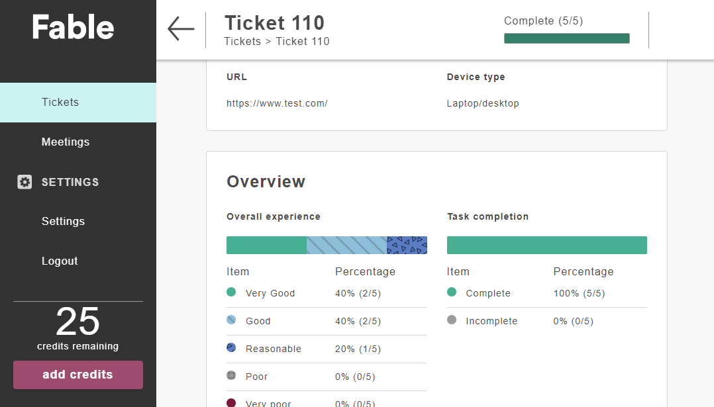
This project is a platform that provides web accessibility testing with real users.
It provides two types of products. The first one is
tests done by visually impaired users, the second one is
remote meetings with these testers.
I present here a small part of the work I realized in this project. All of the front-end and
back end development of the features that you can see on this page
have been done by myself.
I started this project in April 2018, when the company started. I was the only developer when we started the project. I worked with the two founders who are UI/UX designers. We have been able to
lead this project to be used by many clients including
several government organizations like Treasury Board of Canada. The team then
expanded. We are now two developers. We work using the Scrum methodology.
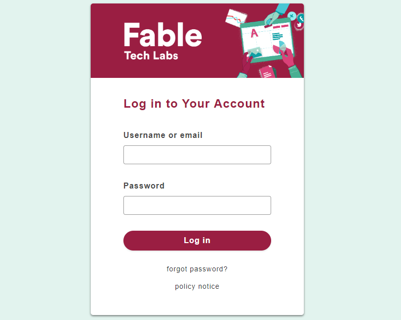
This is the authentication page. There are three types of users: testers, clients, and
admins.
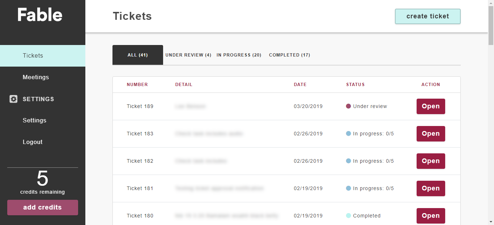
Here is the ticket list of a client. A ticket is used to test a user journey with
one to ten testers who live with a disability. Tickets appear under different tabs
depending on their status.
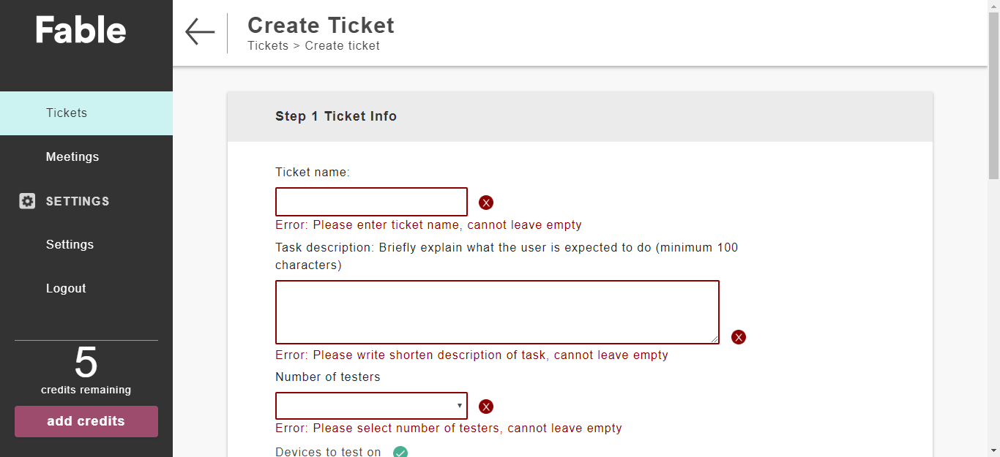
Here is the ticket creation form for a client. The client is requested to enter all
necessary information, such as the number of testers he needs, if he wants it to be tested
with a specific device, a specific browser, etc.
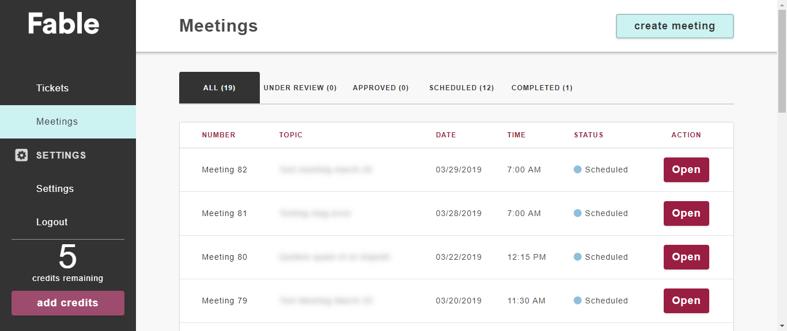
Here is the meeting list of a client. As for tickets, meetings appear under different
tabs depending on their status.
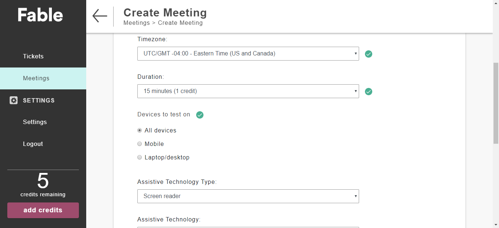
Here is the meeting creation form. As for tickets, the client is invited to enter the
necessary information such as the timezone, the duration, the device type, the assistive
technology, etc. Once the meeting is created, it must be validated by an admin. The
meeting will then appear in the dashboard of testers whose technical specifications
correspond to the client's request. The tester can also receive a notification if it has
activated it in the settings. When a tester accepts the meeting, the meeting is created
with the Zoom API which generates a link to access the meeting.
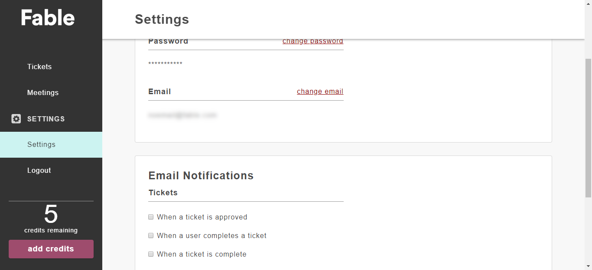
This is the settings page of a client. On this page the client can change his password,
his email, as well as enable or disable certain types of notifications.
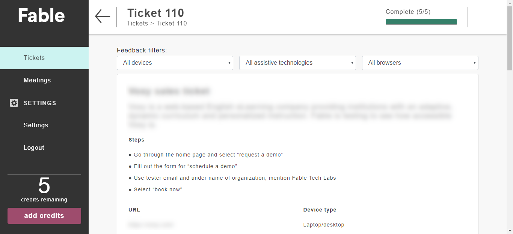
Here is the beginning of the summary page of a ticket. This page is accessible from the
moment a test has been performed by a tester. The client can choose to display only the
tests for a specific device, a specific assistive technology or a specific browser.
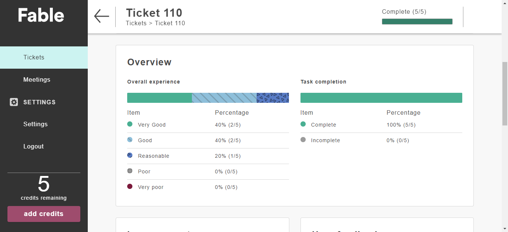
Here is the continuation of the summary page of a ticket. It shows a condensed information
of the data entered by the testers.
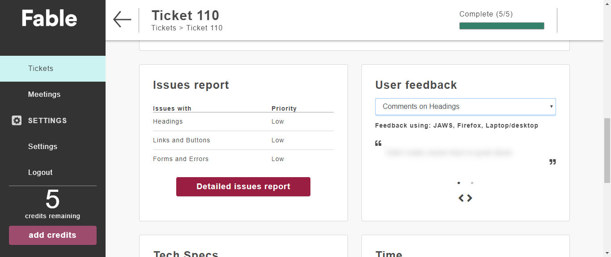
On this part of the page, we can see a report of the issues reported by the testers as
well as all the comments provided by the testers for each criterion. The client can open a
page that shows a more detailed issue report containing for example the WCAG guidelines
corresponding to each of their issues.
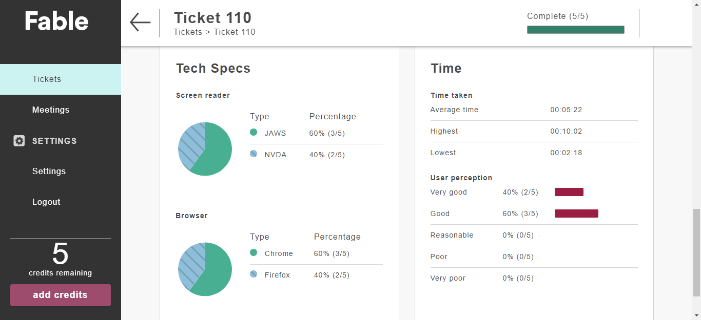
Here is the bottom of the summary page of a ticket.
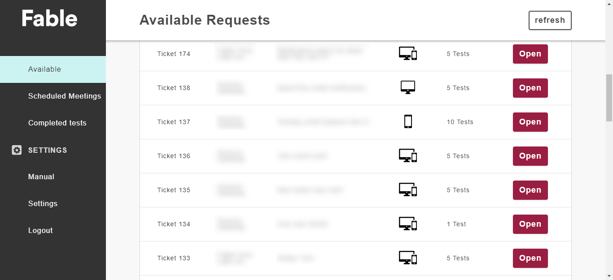
Here is the list of tickets available for a tester.
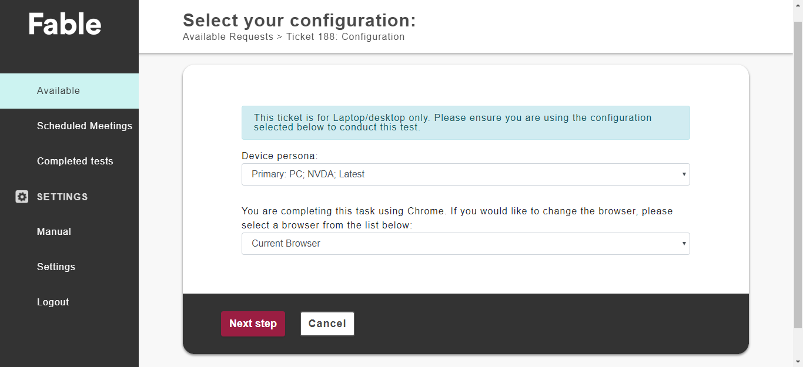
When a tester opens a ticket, he has to choose the configuration he will use for the
test. Each tester has previously defined different configurations that he will use for its
tests. Some tickets require a specific configuration, in this case the tester can only
choose configurations that correspond to the ticket.
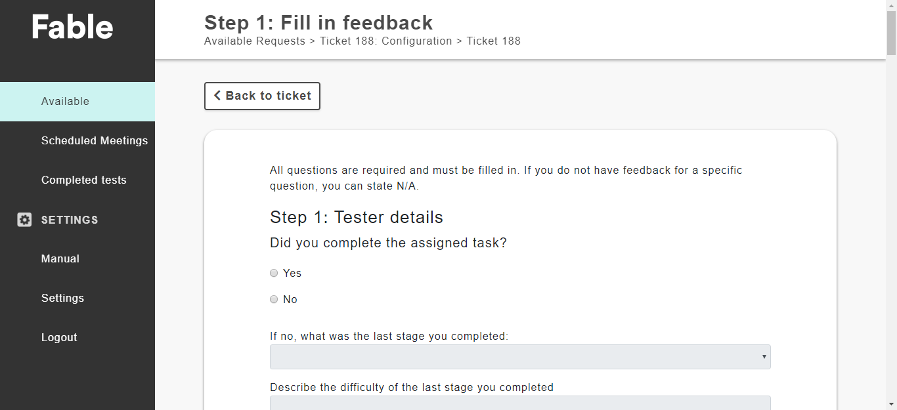
Once the tester has completed his test, he must complete a form detailing his experience.
It is this information that will be used to generate the ticket summary page seen above.
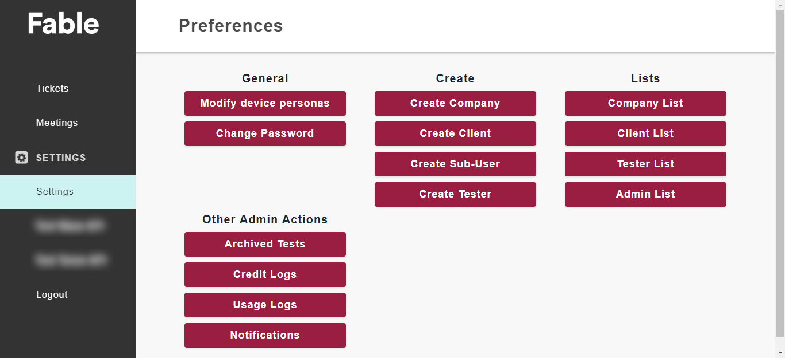
Here is the administration page.
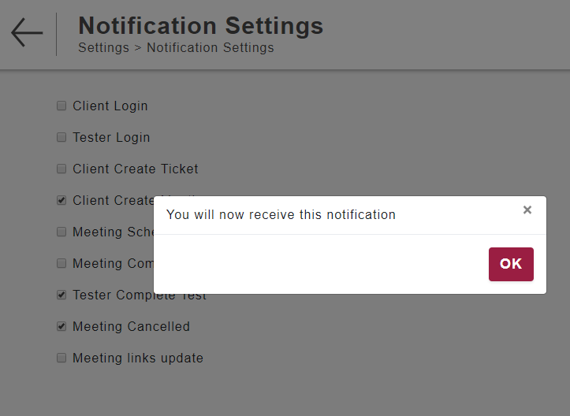
Here are the notification settings for an admin. An admin can choose to be
notified when a user logs in, when a ticket is created, when a meeting is scheduled, etc.
{kind=link}
{kind=link}
{kind=link}
{kind=link}
{kind=link}
{kind=link}
{kind=link}
{kind=link}
{kind=link}
{kind=link}
{kind=link}
{kind=link}
{kind=link}
{kind=link}
{kind=link}